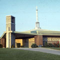

|  |
Our Lady Seat of Wisdom Chapel
Built in 1865
Currently owned by Marist College. |
Our Lady Seat of Wisdom Chapel is the crown jewel in the diadem of buildings which comprise the Marist College campus. The chapel was built in 1953 by Marist Brothers under the direction of Brother Nilus Donnelly. Its circular design was one of the first for a Catholic church in the United States. The design was later established with the Second Vatican Council in 1965 in which churches began to move their altars into a similar circular shape.
Brother Nilus decided that instead of stained glass windows he would line the perimeter of the chapel with the photographic images of the Virgin Mary with accompanying quotes from the scripture. The images would be placed on heavy plastic and suspended on springs which compensated for the expansion from the sunlight and the contraction during the night. Rita Hunt, a professional model, and her husband were friends with Brother Nilus and volunteered to depict the Virgin Mary. Unfortunately, the images have faded due to the bleaching of the sun.
Our Lady Seat of Wisdom Chapel forms the core, the anchor, and the inspiration for the Marist College campus.